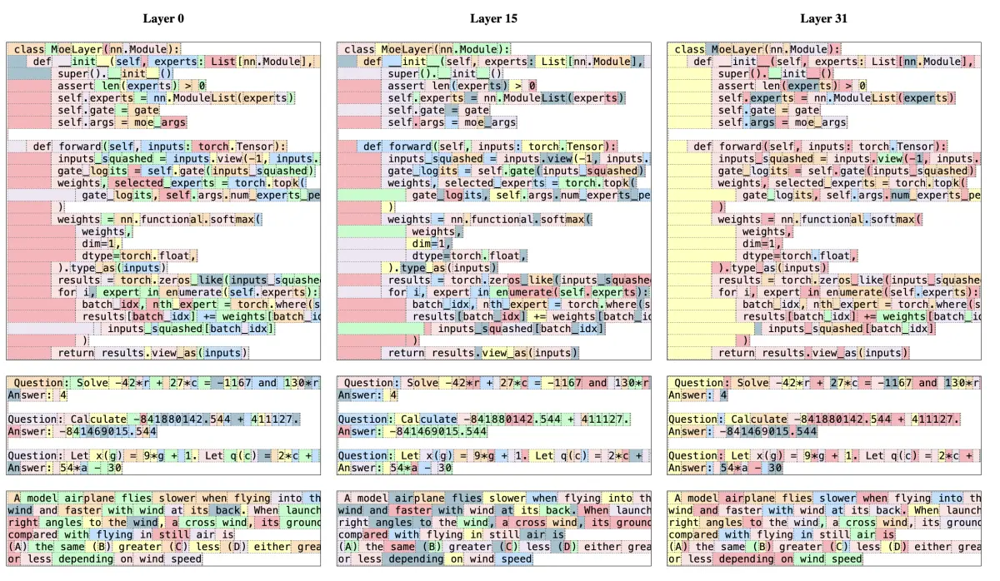

Mistral is a fast follower: it takes an efficiency idea that already works elsewhere (a sliding window with shared key-value heads, sparse experts, then DeepSeek's latent attention and fine-grained experts), ships it early at a size people can run on their own hardware, and decides what you may do with each model by putting it on one rung of a four-rung licence ladder.
Mistral AI is a Paris lab founded in April 2023 by Arthur Mensch (from Google DeepMind) and Guillaume Lample and Timothée Lacroix (both from Meta) (Wikipedia). Its bet is that a cheaper model with open weights and EU jurisdiction wins the deals raw benchmark position does not: sovereign and defence work, regulated on-premises installs, anyone who cannot send tokens to a US API. Mensch, July 2026: "we do not yet own the best language models, but we've constantly reduced that gap" (Tech Times). It is the European counterweight to the Chinese open-weight labs, alongside Ai2 and the Institute of Foundation Models (the page's own positioning, not a sourced ranking); how it compares with every other lab is on the landscape root.
You need: grouped-query attention, sliding windows and latent attention from Attention variants; total against active parameters and routing from Mixture of experts; GRPO from Alignment: SFT, RLHF, DPO, RLVR. This page says what Mistral chose and what it bought; those pages teach the mechanisms. Whole-model cache sizing at any context is in the KV-cache calculator, where every Mistral model is a preset.
Three years of shapes: dense, eight big experts, 128 small ones, and dense again where it suits
Each row is one model's layer as its config describes it. Squares are feed-forward experts (blue: routed to by one token; purple: the shared expert every token uses; grey: held in memory, idle for this token). Total over active parameters is the sparsity ratio r. The licence tag is the model's rung on the ladder. Sources: Mistral 7B paper, Mixtral paper, the configs (Large 3, Small 4, Medium 3.5) and Mistral for Large 4, whose config is unpublished.
The rolling buffer stops at 4,096 positions; the other two keep growing
"Full MHA" is a hypothetical Mistral 7B with 32 key-value heads. Bytes assume 16-bit keys and values. Defaults reproduce the paper's 8x saving at 32k and its 131K "theoretical attention span" (32 × 4,096 = 131,072, sixteen times the 8,192-token training context) independently.
Mistral 7B (September 2023) attacked the KV cache twice. Grouped-query attention: 32 query heads share 8 key-value heads, so the cache stores a quarter of what multi-head attention (MHA) would. Sliding-window attention: each layer attends only to the last W = 4,096 tokens, implemented as a rolling buffer that overwrites the token that just left the window. Windows stack, so after k layers a token can be influenced by about k · W earlier tokens, the way stacked convolutions grow a receptive field; anything beyond the window arrives only through what the intermediate states carried, so exact long-range recall is weaker than with full attention. Both mechanisms, and the reach stepper, are on Attention variants; here is what they bought on Mistral's own shape.
Concretely (Mistral 7B paper, Table 1; config.json): width 4,096, 32 layers, head dimension 128, feed-forward width 14,336, 32 query heads, 8 key-value heads, window 4,096, context length 8,192, vocabulary 32,000, Apache 2.0. One token leaves 2 × 32 × 8 × 128 × 2 = 131,072 bytes, 128 KiB, of 16-bit keys and values. At 32,768 tokens a full cache would need 4 GiB; the rolling buffer holds only min(32,768, 4,096) positions, 512 MiB: "On a sequence length of 32k tokens, this reduces the cache memory usage by 8x, without impacting the model quality" (paper). The animation walks the same input through the three designs.
Predict: by how much does the rolling buffer grow between token 8,192 and token 32,768? It plays by itself; then switch to Full GQA (what Mixtral does) and Full MHA on the same input.
In symbols: btok = 2 · L · nkv · dh · s bytes per token (key and value, layers, key-value heads, head dimension, bytes per number), and the buffer holds M(n) = btok · min(n, W); the reach bound is R(k) ≈ k · W, an upper bound on influence, not a guarantee the information survived. The general formula and every model's cache are on Long context.
What it bought. Mistral 7B outperformed "the best open 13B model (Llama 2) across all evaluated benchmarks, and the best released 34B model (Llama 1) in reasoning, mathematics, and code generation" (paper), which established the lab, and it became a common small base for fine-tuning (unconfirmed as "the default"). What did not last: Mistral itself dropped the window in Mixtral, which supports "a fully dense context length of 32k tokens" (Mixtral paper); every current Mistral model uses full grouped-query or latent attention. Treat the window as a 2023 Mistral choice, not a family trait.
Mistral's announcement calls it a 7.3B-parameter model (Mistral); summing the table gives 7.24B (32 layers of 218.1M plus 0.26B of input and output embeddings), about 14.5 GB at 16 bits.
The 131K reach does not mean Mistral 7B handles 131K-token inputs: it is a theoretical bound on how far information can propagate through 32 windowed layers, and the model was trained on 8,192-token contexts.
Mixtral 8x7B (December 2023) is Mistral 7B's block with one change that mattered and one that is easy to miss (Mixtral paper; config.json). The change that mattered: each layer's feed-forward network becomes 8 experts of the same shape plus a router that sends every token to the top 2, mixing their outputs by a softmax over the two kept scores. The one easy to miss: it dropped the sliding window for full attention over 32k tokens. Everything else (width 4,096, 32 layers, 32 query and 8 key-value heads) is Mistral 7B's. Only the feed-forward networks are copied, so "8x7B" is 46.7B total and 12.9B active, not 56B; the sparsity ratio is 3.6. Routing and load balancing in general are on Mixture of experts.
Parameter counts summed from the configs (Mistral 7B, Mixtral 8x7B); they reproduce the Mixtral paper's 47B and 13B independently. Which experts the router picks is illustrative.
What it bought. Mixtral "outperforms or matches Llama 2 70B and GPT-3.5 across all evaluated benchmarks" at the per-token compute of a 13B model, under Apache 2.0 (paper), which made open sparse mixture-of-experts models mainstream. Mixtral 8x22B (April 2024) scaled the same design to 141B total and 39B active with a 64k context (Mistral).
Mistral's own routing analysis is the finding people still cite. Expert distributions over ArXiv, PubMed, PhilPapers and the rest of The Pile are nearly identical; the router shows "structured syntactic behavior", so tokens such as self in Python or "Question" in English "often get routed through the same expert". The paper's own Figure 8 shows it.
Consecutive tokens are assigned the same expert far more often than chance in the middle and late layers. That matters for serving: a hot pair of experts can over-subscribe one GPU, and the repetition can be exploited for caching. The share of repeats by layer and dataset (the paper's Table 5, against the random baseline) is charted on the Mixtral of Experts paper page, which owns the routing evidence.

Eight large experts are now the classic baseline, not the frontier: the Chinese open-weight labs moved to hundreds of small experts with an always-on shared one, and Mistral followed. It now ships both architectures and picks per product, which makes it a natural experiment.
reasoning_effort setting of none or high instead of separate models.Layer sums from the configs (Large 3, Small 4, Medium 3.5) with the formulas of the Weights tab; Large 4 is not drawn (the card gives its expert counts but no widths).
Why both? Memory is priced on total parameters and compute on active ones. Small 4 and Medium 3.5 occupy about the same memory (119B against 128B), but a token through Small 4 touches 6B to 8B parameters and a token through Medium 3.5 touches all 128B, 16 to 21 times more work. Sparse wins when throughput per GPU is the bill; dense keeps every parameter engaged on every token, avoids routing and all-to-all communication, and is simpler to fine-tune and serve, the trade Mistral made for its agentic coding flagship. The cache tells the same story (Fig. 3, step 5): the MoE models use latent attention and the dense one does not; every model is a preset in the KV-cache calculator.
Predict: which bar moves when you change the precision? Memory for the weights is M = Ptotal · s (s bytes per parameter: 2 at BF16, 1 at FP8, 0.5 at 4 bits); forward compute is Ctok ≈ 2 · Pactive FLOPs per token, one multiply and one add per active parameter, ignoring attention over the context.
Memory follows the total, compute the active count, and no precision changes the compute bar
Mistral's stated counts and the formulas above; dashed marker: one 8 × H200 node, 8 × 141 GB = 1,128 GB (Nvidia). Worked: Mixtral 8x7B r = 46.7 / 12.9 ≈ 3.6; Large 3 675 / 41 ≈ 16.5; Large 4 1,000 / 52 ≈ 19.2; Small 4 119 / 6 ≈ 19.8 (14.9 with the 8B figure); Medium 3.5 and Devstral 2 dense, r = 1. Large 3 at FP8 needs 675 × 1 = 675 GB for its weights, hence the full eight-GPU node, yet costs about 2 × 41 = 82 GFLOPs per token, less than the 256 GFLOPs of dense Medium 3.5.
Mistral states Small 4's active parameters three ways: 6B per token "(8B including embedding and output layers)" in its announcement, and 6.5B on the model card. Summing the config: the layers alone are 5.56B, 6.10B with the output layer and 6.53B with the vision encoder too, so 6B and 6.5B both reproduce; no sum reaches 8B (everything included is 7.06B). The same convention (output layer counted, input embedding not, since looking up a row is not a multiplication) reproduces Large 3's 39B for the language model exactly (39.0B); adding the vision encoder gives 41.6B against the stated 41B. The Weights tab sums every model every way.
Medium 3.5's dates: weights and API arrived on 28 to 29 April (docs); Mistral's announcement followed on 22 May, when it replaced Medium 3.1 and Magistral in Mistral's assistant and Devstral 2 in its coding agent (Mistral). Devstral 2 (9 December 2025) is 123B under the modified MIT licence, with Devstral Small 2 at 24B under Apache 2.0, both 256k context, reported at 72.2% and 68.0% on SWE-bench Verified (Mistral); both are retired from the API (Small 2 on 31 March 2026, Devstral 2 on 31 July) with Medium 3.5 as the replacement (catalogue), and the weights remain on Hugging Face.
The order explains the current shape. In 2024 and 2025 Mistral shipped a model per job: a flagship that started API-only (Mistral Large 1, February 2024; Large 2 in July 2024 released its weights under the research-only Mistral Research License, with a paid licence for commercial self-deployment, Mistral), price tiers (Small 3 and 3.1 back on Apache 2.0, Medium 3 on the API), and specialists: Codestral trained for fill-in-the-middle (completing inside a file given both the prefix and the suffix, the shape editor autocomplete needs), Ministral edge models, Pixtral for vision (from September 2024, an image encoder feeding the language decoder so images and text interleave in one context), Voxtral for speech (July 2025), Magistral (June 2025), its first reasoning models, and Devstral (May 2025), tuned for the agent loop of reading a repository, editing files and running tests inside a scaffold. Mistral 3 (2 December 2025) brought Large 3 plus Ministral 3 at 3B, 8B and 14B, each in base, instruct and reasoning variants, all multimodal and Apache 2.0 (85% on AIME 2025 for the 14B reasoning variant, by Mistral's report, Mistral); Devstral 2 followed a week later with the Vibe command-line coding agent.
In 2026 the specialists folded back into generalists: Small 4 absorbed Magistral and Devstral behind a reasoning setting, Medium 3.5 replaced them in Mistral's own products, and vision is built into Large 3, Small 4 and Medium 3.5; every Pixtral, Magistral and Devstral version is in the deprecated table of Mistral's catalogue. Specialists remain only where the job is different in kind: speech, document OCR, formal proofs (Leanstral), safety (Shieldstral) and robotics (Robostral Navigate).
A model per job in 2024 and 2025; in 2026 the arrows converge on Small 4 and Medium 3.5
One lane per job; filled dots have open weights (green Apache 2.0, orange modified MIT, purple research or non-commercial), rings are API only or unstated; dashed arrows are a specialist folded into a generalist; 2026 is drawn wider. Read the colours too: the purple of 2024 gives way to green from Small 3 onwards, and orange appears only for the dense agentic models. Dates are each announcement's unless the card says otherwise. Click a dot for its card.
In July 2026 Mistral opened partner early access to a model Mensch called a "fat but sparse" family (Tech Times); on 6 October it became Mistral Large 4 ("Le Chonk"), a public API preview of a natively multimodal mixture of experts covering more than 160 languages and trained on 3,800 NVIDIA Grace Blackwell GPUs (Mistral). The weights followed on 29 October 2026 as Mistral-Large-4-1T-A52B, under the Mistral Ecosystem Open-Weight License, a modified MIT: free to use, fine-tune and sell, except that a model-as-a-service business needs a separate commercial licence from Mistral (Mistral, model card). The card fixes the shape: about 1T parameters in total and about 49B active per token (52B counting the embedding and output layers, hence "A52B"), a granular MoE of 128 routed experts with 4 active plus 1 shared, and a 1M-token context (model card). The attention is the Large 3 recipe pushed for a million tokens, per vLLM's write-up of the config: latent attention (MLA) with a DeepSeek-style sparse indexer (DSA) that keeps the top 2,048 keys per query, and nine of the 72 layers reading layer 35's latent cache instead of writing their own, so 63 layers hold a cache (vLLM; the mechanisms are on Attention variants and Long context). It also ships its own draft model, "DSpark": three MLA layers inside the checkpoint that propose a block of three tokens for speculative decoding (model card; mechanism on Speculative decoding), and an NVFP4 checkpoint for Blackwell GPUs. It is Mistral's strongest model on the Artificial Analysis index by far, and still below the best Chinese open-weight models (scores below).
Mistral's own: DeepSWE 1.1 61.7%, Terminal-Bench 4.0 28.3%, AutomationBench 59.9%, and 3.74 in Surge AI's blind human evaluation against Claude Opus 5's 4.22 and GLM-5.3's 3.60 (Mistral). Independent: Artificial Analysis scores the preview 38 on Intelligence Index v4.3 at $1.13 per index task, listing a 524K context (Artificial Analysis); Vals AI's fixed mini-swe-agent harness gives 27.78% on Terminal-Bench 4.0 against 65.15% for Claude Opus 5.5 (Vals AI). Those are preview readings. For the open-weight release, Artificial Analysis measures 26 on its Intelligence Index v5 (a new scale introduced on 27 October 2026, not comparable with the v4.3 figure) at $2.06 per index task (Artificial Analysis); Mistral, citing Artificial Analysis, reports 41% on Terminal-Bench 4.0 (28% for the preview) and 48% on the Coding Agent Index, about level with GLM-5.3 (Mistral). vLLM measures about 2.9 accepted draft tokens per DSpark step and about twice the output throughput on eight-way tensor parallelism, its figures on its own benchmark (vLLM).
Shieldstral 1.0 (4 August 2026, Apache 2.0): a guard model (text and image input, 32k context, public preview) that takes a safety policy written in natural language as a question and answers yes or no, covering prompt moderation, response moderation, prompt-response pairs and refusal detection (model card). Because the policy is an input rather than a fixed list of harm categories trained into the weights, a policy change needs no retraining, and because it is a separate model, the policy lives outside the generator. Mistral says it "matches models up to 7x its size on text safety" and sets a new state of the art on multimodal moderation (Mistral); it does not win every text benchmark (85.0 on BeaverTails against 85.9 for Qwen3Guard-8B, Hugging Face). Size: 3.8B on the docs card, "3B" in the post and the repository name (built on Ministral 3 3B).
Robostral Navigate (8 July 2026, licence not named): an 8B model that takes images from a single RGB camera plus a plain-language instruction ("leave the lobby, walk through the corridor, enter the supply room and stop to face the second shelf") and outputs navigation actions: a target point in the image with an orientation, or a displacement in the robot's frame. Trained entirely in simulation on about 2.4 million trajectories across 350,000 scenes, then refined with online reinforcement learning; Mistral reports 76.6% success on unseen environments of the R2R-CE vision-and-language navigation benchmark (Mistral). The announcement names no licence and links no weights.
Leanstral (March 2026) and Leanstral 1.5 (July 2026), Apache 2.0: open-weight Lean 4 proof generation built on the Small 4 family, 119B total and 6B active by the blog (6.5B on the card) (Leanstral; Leanstral 1.5; Hugging Face). Leanstral 1.5 solves 587 of 672 PutnamBench problems by Mistral's report. Both versions are retired from the API (30 June and 30 September 2026); the weights remain.
Speech and OCR: Voxtral TTS (March 2026, open weights under a non-commercial licence) and the Voxtral transcription models; OCR 4 (June 2026), replaced by OCR 4.1 in July.
Mistral publishes weights first and papers rarely, so most of its recipes have to be inferred from the artefacts. Two things are documented, both in the Magistral paper.
Pure RL for the big model. Magistral Medium was trained from Mistral Medium 3 by reinforcement learning with verifiable rewards (RLVR) alone: no learned reward model, and no reasoning traces distilled from someone else's reasoner. A rollout is scored by mechanically checking its final answer (a maths result by a rule-based checker with SymPy, or code against 20 unit tests), so style cannot game the reward the way it can game a preference model. The algorithm is GRPO (score each of a group of answers to one prompt against the group's mean instead of a learned critic; the full objective is on Alignment: SFT, RLHF, DPO, RLVR), with Mistral's own changes:
<think> block, the answer in \boxed{} or a fenced code block); otherwise 0.1 for the format, a further 0.9 for a correct answer, a soft length penalty of up to −0.1 that grows linearly once an answer passes lmax − lcache (raised from 16k to 32k tokens during Medium's run), and 0.1 more when problem, reasoning and answer share a language (10% of problems were translated into French, Spanish, Italian, German, Chinese and Russian).Predict: what happens to the group if every answer is correct? One group of eight answers to the same problem: toggle what each got right and watch the rewards, the advantages and the filter.
Distillation for the small one. Magistral Small (24B, Apache 2.0) was not pure RL: it was cold-started with supervised fine-tuning of Mistral Small 3 on reasoning traces from Magistral Medium (correct traces from Medium's RL run, plus Medium's answers to OpenThoughts and OpenR1 code prompts, plus 10% general instruction data), then trained with RL on top. Distillation as a method is on Distillation and small language models.
What it bought, on the paper's own evaluation: AIME 2024 pass@1 went from 26.8% for Mistral Medium 3 to 73.6% for Magistral Medium (90.0% by majority vote over 64 samples), and Magistral Small reached 70.7%, against 65.4% with the distilled traces alone. Magistral no longer ships: reasoning is now a setting on Small 4 and Medium 3.5, and every Magistral version is deprecated. Reasoning modes and adjustable effort in general are on the landscape root.
Reward rules from the Magistral paper, section 2.2; the group of eight and the answers are illustrative (the paper does not state the group size). "Half into the penalty zone" is an answer halfway between lmax − lcache and lmax. Standard GRPO divides by the group's standard deviation; Magistral does not, and normalises across the minibatch instead.
What you may do with a Mistral model depends on its rung, and "Mistral is Apache 2.0" is true of Large 3 and the small models, not of the catalogue or of Large 4.
| Rung | What it allows | Current models on it |
|---|---|---|
| Apache 2.0 | Download, fine-tune, serve and redistribute commercially; no usage-policy annex and no user cap. Redistribution keeps the licence and notices (Apache 2.0, section 4). | Large 3, Small 4, Ministral 3 (3B, 8B, 14B), Shieldstral, Voxtral Small, Voxtral Mini Transcribe Realtime; open weights also for Devstral Small 2 and Leanstral, now retired from the API |
| Modified MIT | MIT terms, except that "you are not authorized to exercise any rights under this license if the global consolidated monthly revenue of your company (or that of your employer) exceeds $20 million", and that applies to derivatives too (licence) | Medium 3.5; Devstral 2 (weights only, retired from the API) |
| Mistral Ecosystem Open-Weight License | A modified MIT: use, modify, fine-tune and commercialise, except that a model-as-a-service offering needs a separate commercial licence from Mistral (Mistral) | Large 4 |
| Non-commercial (CC BY-NC 4.0) | Open weights for research and personal use only | Voxtral TTS (Mistral) |
| API only ("Premier") | Use through Mistral's API; no weights | Codestral 25.08, OCR 4.1, Codestral Embed, Mistral Embed, Mistral Moderation 2, Voxtral Mini Transcribe 2 (catalogue) |
Predict: tick the $20M box with weights and commercial use: which of the open models do you lose? Each model shows whether you may use it and how.
Apache 2.0 is the rung that made Mistral's name, and it is an engineering fact, not only a legal one: no acceptable-use annex and no user threshold of the kind in Meta's Llama community licence (which incorporates an acceptable use policy and requires a separate licence above 700 million monthly active users, Llama 3.1 licence), so a company can fine-tune the model and run it inside a product without asking anyone. It is also the wedge into government, defence and on-premises deals. Since 2025 the ladder has widened at both ends: the dense agentic flagships carry a revenue carve-out that bites at $20M a month, Large 4 a carve-out aimed at resellers of the model as a service, far below Llama's threshold; the voice model is non-commercial; code completion, OCR and embeddings are API only.
Volatile: catalogue, list prices (USD per million input / output tokens, Mistral's first-party prices) and Artificial Analysis Intelligence Index v4.3 (methodology 4.3.2) as read on 1 October 2026 (Large 4's price and index on 19 October, from the preview; its licence on 2 November 2026). Cross-provider comparison is on the landscape root.
| Model | Role | Size | Licence | Price in / out | Index; $ per task |
|---|---|---|---|---|---|
| Mistral Large 4 | Flagship, multimodal; open weights since 29 October 2026 | About 1T total, 49B active (52B with embeddings and output; MoE) | Mistral Ecosystem Open-Weight License (model card) | $1.36 / $4.18 (Mistral) | 38; $1.13 |
| Mistral Large 3 | Previous flagship, multimodal; the largest Mistral weights published | 675B total, 41B active (MoE) | Apache 2.0 | $0.50 / $1.50 (docs) | 9.3; $0.031 |
| Mistral Medium 3.5 | Agentic and coding flagship, reasoning setting, multimodal | 128B dense | Modified MIT | $1.50 / $7.50 (docs) | 14.2; $0.50 |
| Mistral Small 4 | Instruct, reasoning and coding in one model, multimodal | 119B total, 6B active (MoE) | Apache 2.0 | $0.15 / $0.60 (Mistral) | 11.3; $0.015 |
| Ministral 3 | Edge and on-device: base, instruct and reasoning | 3B, 8B, 14B (3.4B, 8.4B and 13.5B of language model plus a 0.4B vision encoder, model card) | Apache 2.0 | ||
| Codestral 25.08 | Code completion with fill-in-the-middle, 128k context | Not stated | API only (docs) | ||
| Voxtral family | Speech understanding, transcription, text to speech | Small 24B, Mini 3B, Realtime 4B, TTS 4B | Apache 2.0 (Small, Realtime), CC BY-NC (TTS), API only (Transcribe 2) | ||
| OCR 4.1 | Document understanding (OCR 4 deprecated) | Not stated | API only (docs) | ||
| Shieldstral 1.0 | Policy-adaptive safety classifier | 3.8B (docs) or 3B (post) | Apache 2.0 | ||
| Robostral Navigate | Camera-and-language robot navigation | 8B | Not stated |
Index scores are Medium 3.5 (high), Small 4 (reasoning) and Large 3 (Artificial Analysis; Large 4). Mistral's three open models sit near the bottom of the open-weight field (the leader scored 46.3 on the same day), but Small 4 is the cheapest per task of any model listed, open or closed, at $0.015. Retired from the API but with open weights: Devstral 2 (123B dense, modified MIT), Devstral Small 2 (24B, Apache 2.0), Leanstral and Leanstral 1.5 (119B total, 6B active, Apache 2.0). Voxtral sizes from the Hugging Face cards (Voxtral TTS, Voxtral Realtime, Voxtral).
Not a frontier lab on capability, but one of the leading Western open-weight providers and the EU's strategic champion: you choose it for the licence, the jurisdiction or the price per token, not for a leaderboard.
Every number here is summed from the model's published configuration (layer count, widths, heads, experts) rather than copied from a headline, so you can see which headline counts what, and what each model's weights take to hold.
The cache, in one line. Mistral's two latent-attention models cache far less than its dense one: one 256K sequence holds 5.6 GiB on Small 4 (22.5 KiB per token) and 17.2 GiB on Large 3 (68.6 KiB), against 88 GiB on Medium 3.5 and Devstral 2 (352 KiB per token over 88 layers). Every Mistral model here is a preset in the KV-cache calculator, which adds the cache, the context and the GPUs to these weights; Mistral 7B's rolling buffer is worked on the Reading tab. This tab is the tool across every model; the Reading tab uses its sums.
Try: Small 4 is selected. Untick the input embedding: the active sum lands on the model card's 6.5B; untick the vision encoder as well and it lands on the blog's 6B. Nothing reaches the blog's 8B. Then pick Devstral 2 and Medium 3.5: the same text model, counted two ways.
Sums: attention projections, norms, routers and feed-forward or expert weights per layer from the config, plus the embedding tables; the vision projector's shape (a 2 × 2 patch merger and a two-layer adapter) is assumed, so vision totals carry a few hundredths of a billion of uncertainty. Verdict: ✓ inside the stated figure's rounding, ≈ within 1%, ✗ beyond. These reproduce Mistral's figures independently, not by construction; where none does (Small 4's 8B), the table says so.
Try: FP8 is selected: Large 3's 675 GB of weights fit one 8 × H200 node, as its model card states; switch to 4-bit and Medium 3.5 fits one H100.
Grey: weights at the chosen precision (Mistral's stated totals; Ministral 3 at the computed totals). The KV cache for each sequence, activations and framework overhead come on top, so real deployments need headroom. GPU sizes: H100 80 GB, H200 141 GB. Defaults reproduce, independently, the model card's statement that FP8 Large 3 runs on one node of eight H200s.
The provider map Mistral sits in, and how it compares with the Chinese open-weight labs and the closed frontier.
The generic mechanism, with Mixtral's parameter count carried through, top-2 routing as the classic design, load balancing, and the move to fine-grained experts.
Grouped-query, sliding-window and latent attention: the mechanisms behind Mistral 7B, Mixtral and Large 3, with the stacked-window reach stepper.
The KV-cache calculator, with every Mistral model as a preset.
Grouped-query and sliding-window attention across the field, local and global layer mixing, and the KV-cache formula applied to every model.
How reasoning modes and adjustable effort work: the context for Magistral and the reasoning_effort setting.
The full GRPO objective and RLVR that Magistral's recipe modifies.
Multi-head latent attention and fine-grained experts in depth: the architecture Large 3 and Small 4 adopted.
The lab whose step back from open weights left Mistral among the main Western open-weight providers.
The Mixtral paper's row in the papers database, with its full summary and results.
The release that mainstreamed open MoE. Read it for the routing analysis, which shows experts specialise by syntax and token position far more than by topic, contrary to what the name suggests.
The one detailed Mistral training recipe, with the GRPO changes and the reward design.
The primary source: releases come fast and are thinly documented elsewhere.
The sliding window, the rolling buffer cache and the architecture table.
Every current model with its version and licence, and the deprecated and retired list with dates.
The dense flagship's features, settings and benchmarks, and the modified MIT licence's $20M revenue clause.
Sizes, deployment on one node, and known limitations.
Dated, sourced entries, but only four confirmed Mistral releases (data through 1 July 2026); use the Reading tab's lineage for the full list.
A walkthrough of the current catalogue.
Sources were read between 1 October and 2 November 2026. Parameter counts and cache sizes are summed from the configuration files on Hugging Face; Artificial Analysis figures are Intelligence Index v4.3 (methodology 4.3.2), read the same day. Prices are Mistral's first-party list prices per million tokens.